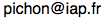

About Me
{kind=link}
I'm an astronomer working in gravitational dynamics, the geometry of the large scale structures and inverse methods. Specifically, I develop and apply analytical, computational and statistical methods to improve our understanding of the physical universe.
Astrophysics
- Walls: Walls of Horizon-AGN
- Another version
- cTTT: conditionnal Tidal Torque Theory
- VRR: Vector Resonant Relaxation
Outreach/Data
- MareNostrum: a very large hydrodynamical simulation
- AMA 09: Marenostrum in the RER Jul 09 - Jan 10 !
Software
- github page
- mathematica stackexchange page
- mpgrafic: Generator of cosmological initial conditions
- Matrix Method linear stability of stellar discs
- LinearStability linear stability of gas discs
- svntexdiff: a svn latex diff tool
- Gram: Non Gaussian extrema counts
- SRR: Scalar Resonant Relaxation
- Critical: Critical events in Gaussian random fields
- Yorick's cosmology A set of functions in the yorick programing language
Publications
Personal
Address
| Name: | Christophe Pichon |
| Laboratory: | Institut d'astrophysique de Paris |
| Sorbonne Universite / CNRS-UMR 7095 | |
| Address: | Institut d'astrophysique de Paris |
| 98, bis boulevard Arago | |
| F-75014 Paris Cedex (FRANCE) | |
| E-mail: |  |
| Phone: | +33 (0)1 44 32 81 35 |
| Fax: | +33 (0)1 44 32 80 01 |